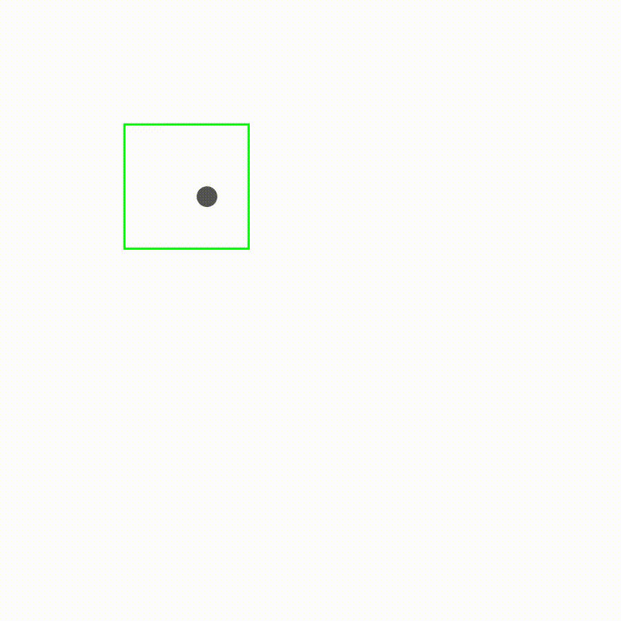

Hey Martin! I've built this really cool little application with
Processing to create form-based flexible visual systems. It's really
just a rough prototype. Do you wan't to see it?
Yes, for sure!

That's super interesting because you can see the process here. How
did you do that exactly?
I have built a small application with Processing. It is a grid
system of 5*5 tiles. When you click on one of the tiles, a new
component is selected. You can imagine it as if the tiles are all on
a stack. When you click, the top tile is taken away so that the one
below it becomes visible.